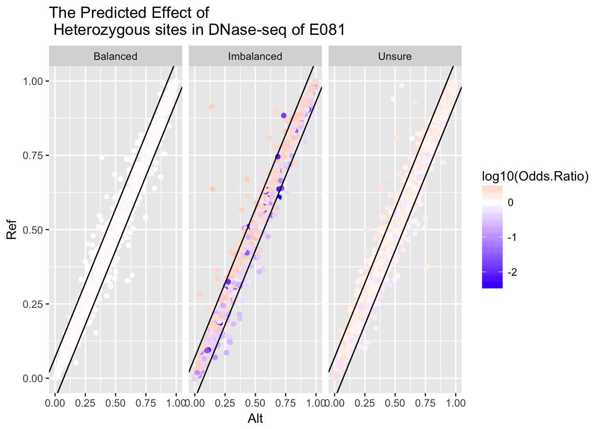
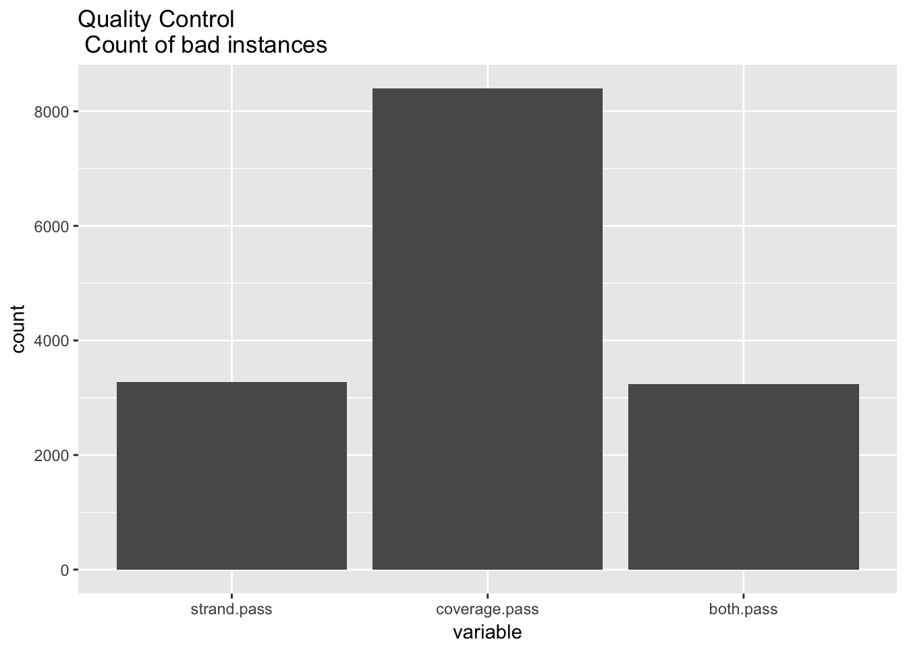
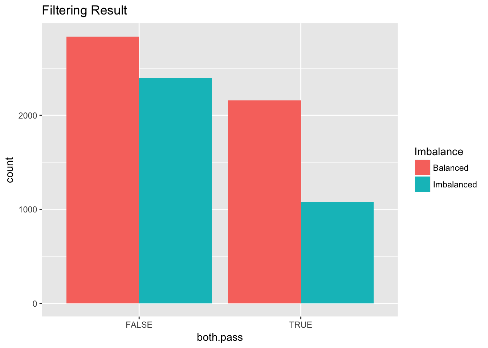
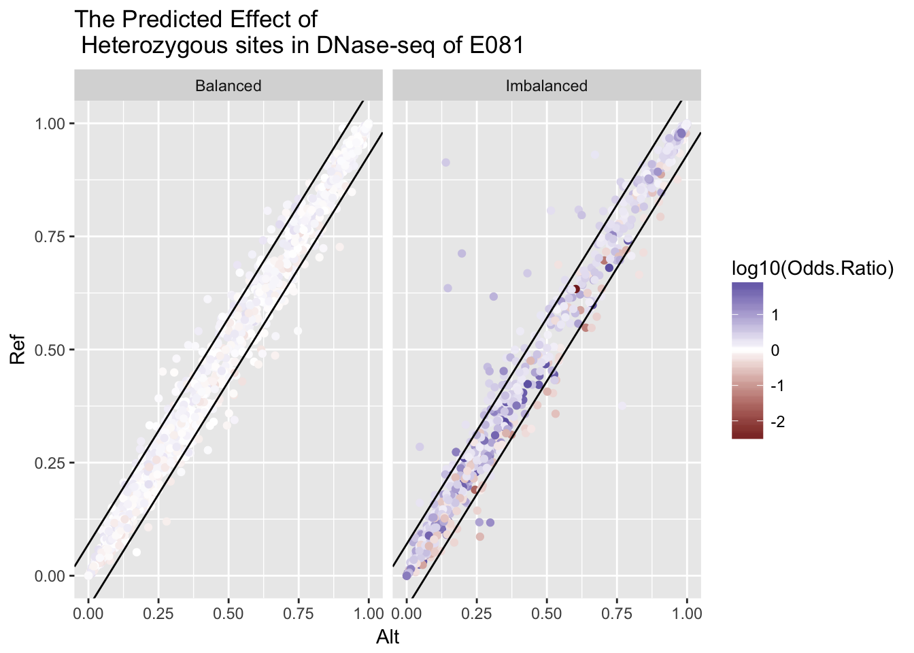
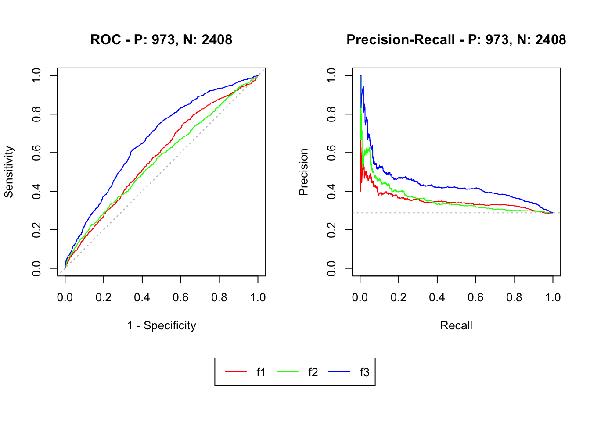
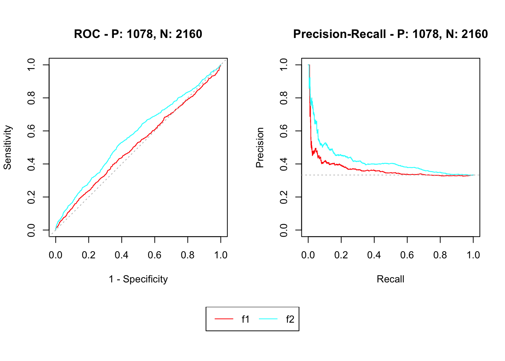

It has not been implemented. TODO
The basic steps to deal with alignment bias is as follow:
WASP to look for reads at possible heterozygous sitesource('my_r.R')
library(feather)
library(ggplot2)
library(reshape2)
variant_url <- 'https://github.com/liangyy/deep_variant/blob/code/allelic_imbalance/data/E081.combined.imbalance.gz?raw=true'
variant <- read.table(read_gz_url(variant_url), sep = '\t', header = T)
score_url <- 'https://raw.githubusercontent.com/CreRecombinase/DeepVariantPrediction/issue1/score/keras_deepsea_with_040417_2_42_head_copy/allelic_imbalance_E081.E081_allelic_imbalance_result.feather'
score <- read_feather_url(score_url)## Warning: Coercing int64 to doublevariant$Ref <- NA
variant$Ref[score$Varient.ID] <- score$Allele1
variant$Alt <- NA
variant$Alt[score$Varient.ID] <- score$Allele2imbalance.threshold <- 0.01 # Fisher's exact test p-value
variant$Imbalance <- 'Balanced'
variant$Imbalance[variant$P.Value < imbalance.threshold] <- 'Imbalanced'\(\frac{|read_+ - read_-|}{read_+ + read_-} < 0.3\)
strand.threshold <- 0.3
strand.read1 <- abs(variant$Reads1Plus - variant$Reads1Minus) / (variant$Reads1Plus + variant$Reads1Minus)
strand.read2 <- abs(variant$Reads2Plus - variant$Reads2Minus) / (variant$Reads2Plus + variant$Reads2Minus)
ggplot(as.data.frame(cbind(strand.read1, strand.read2))) + geom_bin2d(aes(x = strand.read1, y = strand.read2)) + ggtitle('Score of Strand Imbalance')
strand.pass <- (strand.read1 < strand.threshold) & (strand.read2 < strand.threshold)The asymmetric result of read1 and read2 may come from alignment bias.
coverage.threshold <- 100
coverage <- variant$Reads1 + variant$Reads2
coverage.pass <- coverage > coverage.thresholdboth.pass <- strand.pass & coverage.pass
variant$pass <- both.pass
temp <- as.data.frame(cbind(strand.pass, coverage.pass, both.pass))
temp <- melt(temp, id.vars = c())
temp <- temp[temp$value,]
ggplot(temp) + geom_bar(aes(x = variable)) + ggtitle('Quality Control \n Count of bad instances')
ggplot(variant) + geom_bar(aes(x = both.pass, fill = Imbalance), position = 'dodge') + ggtitle('Filtering Result')
variant.pass <- variant[variant$pass,]
ggplot(variant.pass) + geom_point(aes(x = Alt, y = Ref, color = log10(Odds.Ratio))) + scale_colour_gradient2() + facet_grid(.~Imbalance) + geom_abline(intercept = 0.07, slope = 1) + geom_abline(intercept = -0.07, slope = 1) + ggtitle('The Predicted Effect of \n Heterozygous sites in DNase-seq of E081')
variant.pass$Log10.Odds.Ratio.Observed <- log10(variant.pass$Odds.Ratio)
variant.pass$Log10.Odds.Ratio.Predicted <- log10(variant.pass$Ref / variant.pass$Alt)
model.linear = lm(Log10.Odds.Ratio.Observed ~ 0 + Log10.Odds.Ratio.Predicted, data = variant.pass)
ggplot(variant.pass, aes(x = Log10.Odds.Ratio.Predicted, y = Log10.Odds.Ratio.Observed)) + geom_point(aes(color = Imbalance)) + geom_smooth(method='lm',formula=y~0+x) + annotate("text", x = 0.4, y = -1, label = lm_eqn(model.linear), parse = TRUE) + ggtitle('Observed Log Odds Ratio vs \n Predicted Log Odds Ratio')
Model: imbalance ~ f(ref, alt), link = binomial. \(f_1 = |x - y|\). \(f_2 = |\log_{10}(x/(1-x)) - \log_{10}(y/(1-y))|\)
model.logistic.abs <- glm(as.numeric(Imbalance == 'Imbalanced') ~ abs(Ref - Alt), family=binomial(link='logit'), data=variant.pass)
model.logistic.lor <- glm(as.numeric(Imbalance == 'Imbalanced') ~ abs(Log10.Odds.Ratio.Predicted), family=binomial(link='logit'), data=variant.pass)library(pander)
panderOptions('knitr.auto.asis', FALSE)
pander(model.logistic.abs)| Estimate | Std. Error | z value | Pr(>|z|) | |
|---|---|---|---|---|
| abs(Ref - Alt) | 4.601 | 1.137 | 4.045 | 5.239e-05 |
| (Intercept) | -0.7945 | 0.04488 | -17.7 | 4.024e-70 |
pander(model.logistic.lor)| Estimate | Std. Error | z value | Pr(>|z|) | |
|---|---|---|---|---|
| abs(Log10.Odds.Ratio.Predicted) | 5.186 | 0.6739 | 7.696 | 1.405e-14 |
| (Intercept) | -0.899 | 0.04614 | -19.49 | 1.458e-84 |
library(precrec)
joined <- join_scores(model.logistic.abs$fitted.values, model.logistic.lor$fitted.values)
msmdat <- mmdata(joined, as.numeric(variant.pass$Imbalance == 'Imbalanced'), modnames = c('f1', 'f2'))
mscurves <- evalmod(msmdat)
plot(mscurves)
pander(auc(mscurves))| modnames | dsids | curvetypes | aucs |
|---|---|---|---|
| f1 | 1 | ROC | 0.5168 |
| f1 | 1 | PRC | 0.3674 |
| f2 | 1 | ROC | 0.5722 |
| f2 | 1 | PRC | 0.417 |